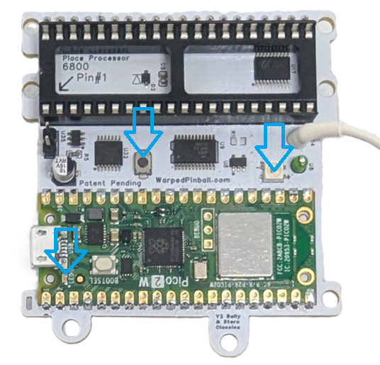
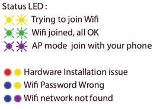
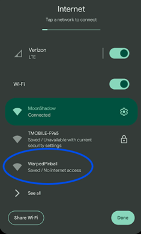
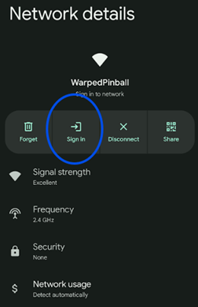
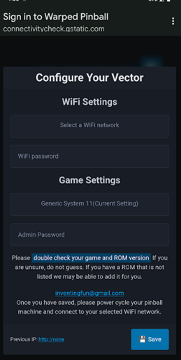
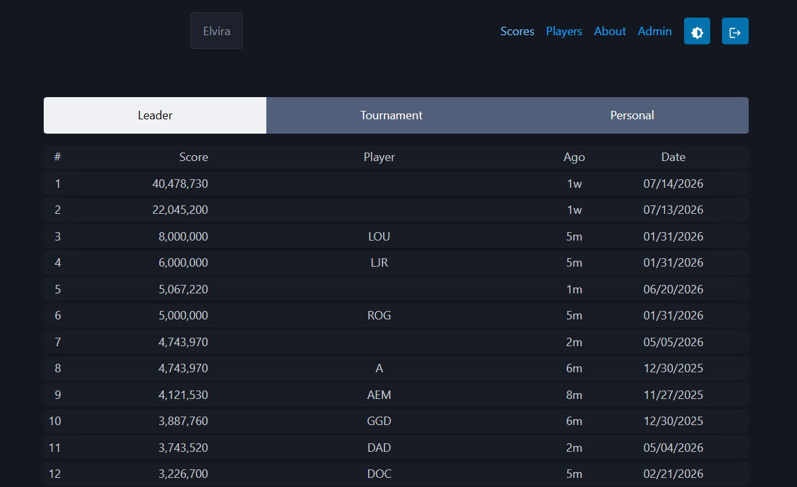
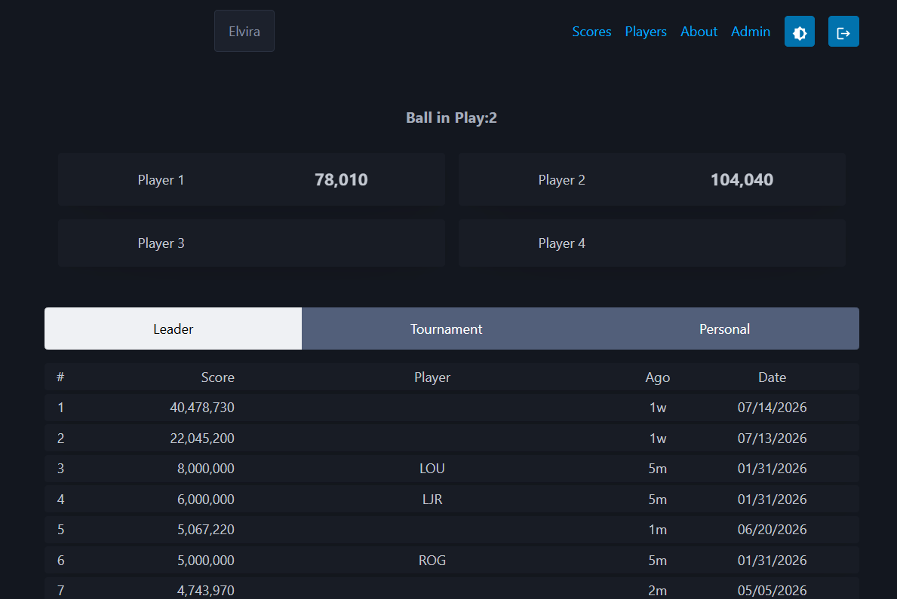
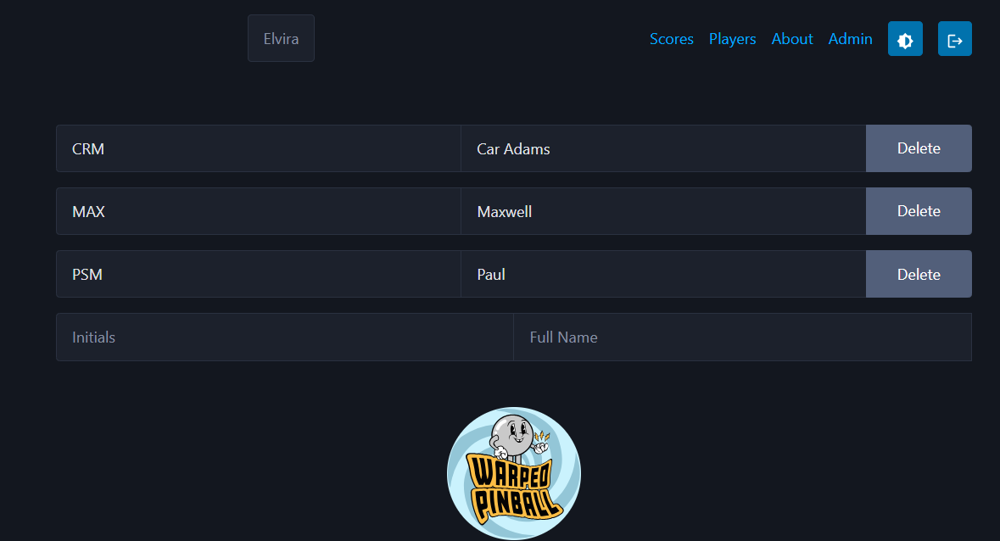
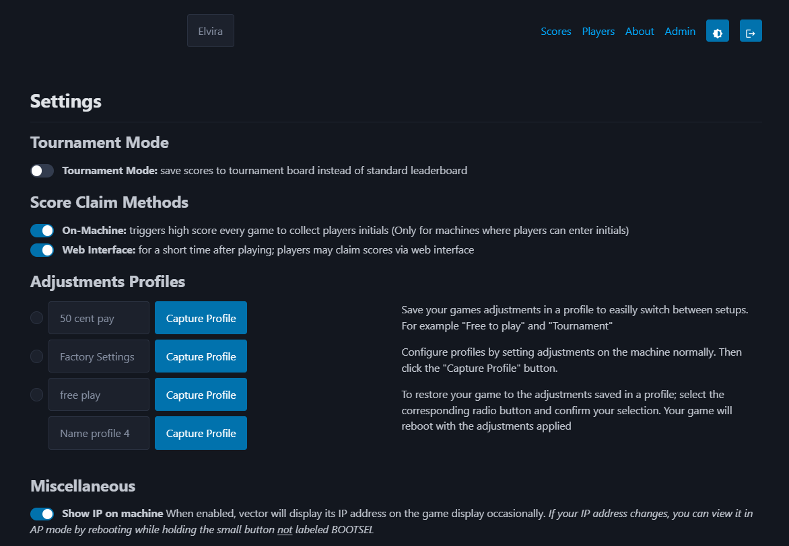
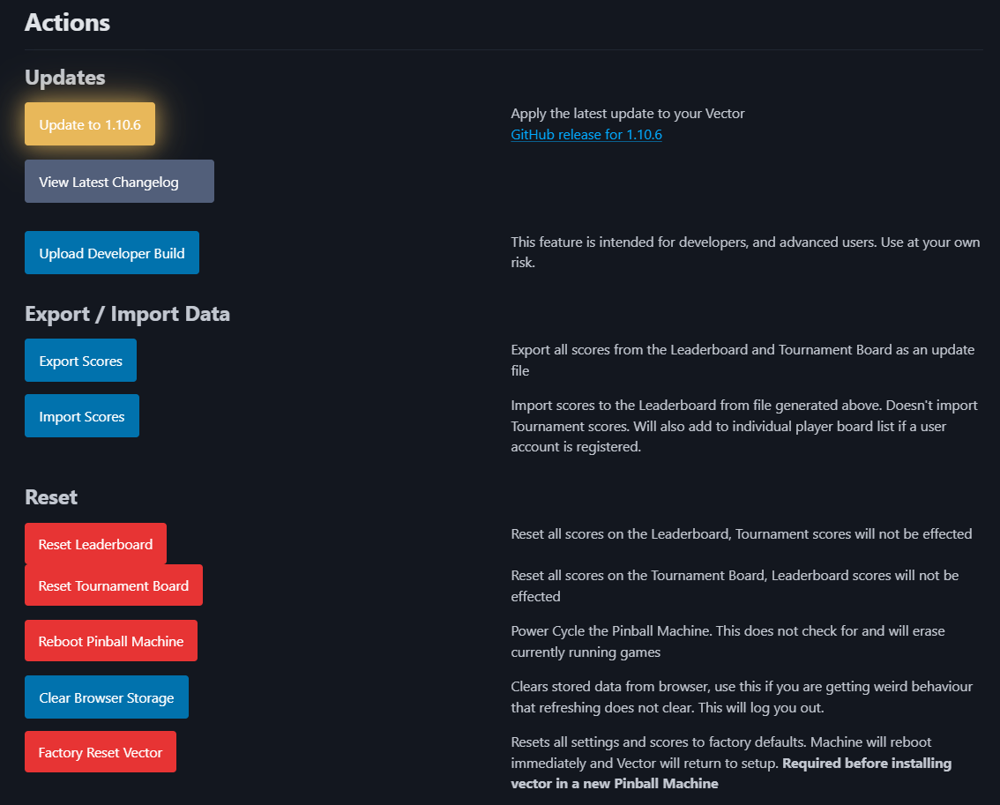

Classic Bally / Stern Vector Installation and Use Manual
How the Vector board installs on a classic solid-state Bally or Stern machine, what the LEDs mean, how to get it on your WiFi, and how to recover from RAM corruption.
Table of contents
- How it works
- Indicators and controls
- LED codes
- Disclaimer
- Boards and supported games
- Hardware installation
- Alltek Systems replacement MPU
- Connecting to local WiFi
- IP addresses
- Web interface
- RAM corruption problems
- Support
How it works
Vector sits between the processor chip and the game's MPU board so it can act like
the RAM chip where settings and scores are stored. Gameplay continues unchanged: the
same ROM runs on the same MC6800 processor. Vector mirrors the game's RAM into
on-board permanent memory, so scores and settings survive a power-off with no
battery and no board modifications. Installation requires no soldering and no
permanent changes to your game.
Indicators and controls
 |
WiFi Configure Button Hold during power-up and release when the LED flashes to enter AP setup mode. Status LED Two-color blink codes (more below)  WiFi Status LED - Fast blink: AP (setup) mode - Slow blink: joining WiFi - Solid on: WiFi joined |
|---|---|
LED codes
The Status LED uses color combinations to indicate system status and faults. Each fault code is two color blinks separated by a brief pause. Multiple faults are shown in sequence with a pause (dark) between each code.
Normal operation
| LED pattern | Status |
|---|---|
| Yellow-Yellow (dim) | Trying to join WiFi at startup |
| Green-Green (dim) | WiFi connected, all systems OK |
| Purple-Purple (dim) | AP mode — join with your phone |
Hardware faults (first blink: RED)
| LED pattern | Code | Description |
|---|---|---|
| Red-Yellow | HDWR01 | Early bus activity — reset hold not working (check the white wire connection) |
| Red-White | HDWR02 | No bus activity |
| Red-Purple | HDWR00 | Unknown hardware error |
WiFi faults (first blink: BLUE)
| LED pattern | Code | Description |
|---|---|---|
| Blue-Yellow | WIFI01 | Invalid WiFi credentials (wrong password) |
| Blue-Purple | WIFI02 | No WiFi signal (network not found) |
| Blue-Red | WIFI00 | Unknown WiFi error |
Configuration faults (first blink: WHITE)
| LED pattern | Code | Description |
|---|---|---|
| White-Yellow | CONF01 | Invalid configuration |
| White-Purple | CONF00 | Unknown configuration error |
Software faults (first blink: YELLOW)
| LED pattern | Code | Description |
|---|---|---|
| Yellow-Red | SFTW01 | Drop through |
| Yellow-White | SFTW02 | Async loop interrupted |
| Yellow-Purple | SFWR00 | Unknown software error |
Disclaimer
Removing chips from classic games carries risk. Work with the game powered off but still grounded, discharge static on the metal backplane before touching electronics, and double-check that every socket and IC is fully seated. Incorrect fuse sizes or partially seated components can damage the machine. If you have never re-seated chips, ask someone experienced to help. Warped Pinball provides email support but cannot be liable for damage to persons or machines.
Boards and supported games
Vector installs and operates identically on every Bally and Stern single-CPU MPU board. The Bally AS-2518-17 and AS-2518-35, and the Stern MPU-100 and MPU-200, are electrically compatible with one another; the lists below exist only to help you identify your game and choose the right profile during WiFi setup.
| Board | Titles |
|---|---|
| Bally MPU AS-2518-17 (1977–1978) |
Black Jack · Bobby Orr Power Play · Eight Ball · Evel Knievel · Freedom · Mata Hari · Night Rider · Strikes and Spares |
| Bally MPU AS-2518-35 (1978–1985) |
Black Pyramid · BMX · Centaur · Centaur II · Dolly Parton · Eight Ball Deluxe · Eight Ball Deluxe Limited Edition · Elektra · Embryon · Fathom · Fireball II · Flash Gordon · Frontier · Future Spa · Grand Slam · Harlem Globetrotters · Hotdoggin' · Kings of Steel · KISS · Lost World · Medusa · Mr. & Mrs. Pac-Man · Mystic · Nitro Ground Shaker · Paragon · Playboy · Rolling Stones · Silverball Mania · The Six Million Dollar Man · Skateball · Space Invaders · Speakeasy · Spectrum · Spy Hunter · Star Trek · Supersonic · Vector · Viking · Voltan Escapes Cosmic Doom · X's & O's · Xenon |

| Board | Titles |
|---|---|
| Stern MPU-100 (1977–1979) |
Cosmic Princess · Dracula · Hot Hand · Lectronamo · Magic · Memory Lane · Nugent · Pinball · Stars · Stingray · Trident · Wild Fyre |
| Stern MPU-200 (1979–1985) |
Ali · Big Game · Catacomb · Cheetah · Flight 2000 · Freefall · Galaxy · Iron Maiden · Lightning · Meteor · Nine Ball · Orbitor 1 · Quicksilver · Seawitch · Split Second · Star Gazer · Viper |

Hardware installation
- Remove the main processor. Locate the
MC6800on the MPU board and carefully lift it out. Inspect the pins for alignment. - Insert the processor into Vector. Place the
MC6800into the socket on the Vector board according to the pin #1 marking. Press evenly until fully seated and confirm no pins are bent under. - Install the pin-strip headers. Insert the supplied pin strips into the MPU board's processor socket. Press firmly on sections of three to four pins until fully seated.

- Add the round-pin chip carrier. Place the 40-pin carrier onto the headers and press down all the way around. Some kits ship with this carrier pre-attached to the Vector board — if so, skip this step.
 5. Mount the standoff. (optional, placement varies) Attach the adhesive standoff to the Vector board with the
plastic screw and remove the backing.
6. Seat the Vector board. Align it with the socket, keeping pin #1 oriented the
same as the original processor, and press until every corner is seated.
7. Make the reset connection.
- Original Bally / Stern MPU board: attach the white micro-clip to the point
shown below. This synchronizes Vector's reset with the game's reset on
power-up, so expect a few extra seconds at startup. This same location is
present on every Bally AS-2518 and Stern MPU-100/200 board (near test points
TP2 / TP3).
5. Mount the standoff. (optional, placement varies) Attach the adhesive standoff to the Vector board with the
plastic screw and remove the backing.
6. Seat the Vector board. Align it with the socket, keeping pin #1 oriented the
same as the original processor, and press until every corner is seated.
7. Make the reset connection.
- Original Bally / Stern MPU board: attach the white micro-clip to the point
shown below. This synchronizes Vector's reset with the game's reset on
power-up, so expect a few extra seconds at startup. This same location is
present on every Bally AS-2518 and Stern MPU-100/200 board (near test points
TP2 / TP3).

- Alltek Systems replacement MPU: do not use the white wire clip — see the next section.
After installation the game operates normally while Vector provides NVRAM service. Configure WiFi to enable leaderboards, tournament mode, and the other features.
Alltek Systems replacement MPU
If your game uses an Alltek Systems "Ultimate MPU" replacement board instead of the original Bally or Stern MPU, the reset connection is handled differently:
- Do not attach the white wire clip anywhere on the Alltek board.
- Instead, install the small jumper included in your Vector kit onto the jumper header on the Warped Pinball Vector board.
The Alltek board drives the processor reset cleanly on its own, and the jumper tells Vector to use that signal directly. Everything else about the installation is the same as an original board.

Connecting to local WiFi
- Power on the machine. The WiFi status LED starts yellow, then flashes purple to indicate AP mode.
- On a phone or computer, join the Warped Pinball network. Ignore any "no internet" warning.

- If a captive portal does not appear, open a browser to reach the configuration page.

- On the configuration page:
- Select your local WiFi SSID and enter the password (case sensitive).
- Choose your game and software version from the dropdown; an incorrect selection can cause erratic behavior.
- Set an Admin Password to protect actions such as erasing scores.
- If the board previously joined a network, its last IP address appears on this screen.

Choosing a profile. If your title appears in the dropdown, pick it — you get live scoring and high-score capture. If not, choose a generic profile instead:
- Generic Bally/Stern MPU — any Bally game (AS-2518-17 or -35) or Stern MPU-100 game.
- Generic MPU-200 — any Stern MPU-200 game.
A generic profile provides NVRAM service and the web interface only.
If your game or ROM isn't supported yet, you can help us add it — email us at: roms@WarpedPinball.com with your help we'll add full support in a firmware update.
- Click Save, power-cycle the machine, and let it reconnect. Yellow during connection and green once connected. See the chart above for other error codes.
- If joining fails (yellow blink for several minutes), power down, hold the WiFi setup button, power up, release when the LED blinks rapidly, and repeat setup.
Pro tip: to re-enter configuration mode later, hold the WiFi config button during power-up and release when the LED blinks rapidly.
IP addresses
- Your router assigns an IP address to each machine (for example
192.168.1.239). - Enter that address in a browser on the same network and bookmark it.
- Router DHCP assignments can change. Find the current address in your router's connected-devices list, or re-enter WiFi setup and read it at the bottom of the configuration page.
- For stability, set a static IP for the device in your router once it appears in the device list.
- Titles that have a profiled display-message area can and will show the IP address on the score displays during attract mode.
Web interface
- Game name is shown in the upper left. If it is wrong, re-check your AP-mode configuration.
- Navigation is in the upper right.
- The leaderboard fills in as you play new games.

- A game in play is shown on the same screen — ball in play and scores update live.
- Something not looking right? Check your ROM version. The ROM revision is usually shown on the displays at power-up; pick that same revision when configuring Vector in AP mode. If your ROM is not supported yet, contact us — we add ROMs regularly.

- Click Players to see and edit the active players list. All players get individual best boards. Initials go on the left, full name on the right.

- The top of the Admin page has several setup options.
- Tournament mode saves all scores to the tournament list instead of the normal leaderboard.
- Score claim on classic games is done from the web interface — after a game, claim your score in a browser.
- Adjustment profiles are not available on classic Bally / Stern games (those games store settings with mechanical switches, not in software).
- You can turn the attract-mode IP display on or off here on titles that support it.

- Software update: click the update button — it tells you when a new version is available, or that the update server was unreachable (try again later). Updates take about two minutes and the game reboots automatically at the end. The current version is shown at the bottom of every page (each platform — WPC, System 11, Classic, etc. — has its own version numbers).
- Upload Developer Build is for test versions when directed by Warped Pinball staff.

RAM corruption problems
after installation you may see evidence of ram corruption. This is particulally commmon with MPU-200 boards. You may see:
- Missing or garbled digits on the score displays
- A nonsense or impossibly high machine high score
- Credits that will not clear, or strange attract-mode behavior
Fix: open the Vector web page, go to the Admin panel, and click Reset Pinball Machine. This reinitializes the game's RAM to a clean state and restarts the machine. Play one full game afterward and confirm the displays and the high score look correct. Vector then keeps that clean RAM image in permanent memory, so the problem should not come back on the next power-up.
Support
Need help or have feature ideas? Visit WarpedPinball.com.
This Warped Pinball product is patent pending.